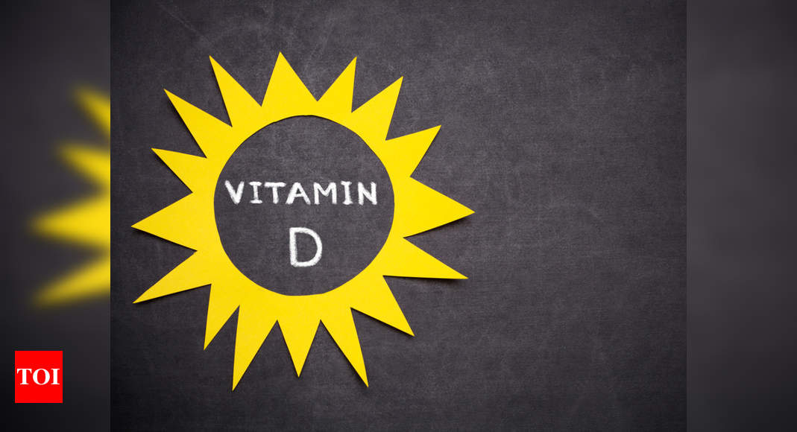

Los niveles adecuados de vitamina D pueden prevenir la gravedad de la infección por COVID-19, según un estudio
Un estudio reciente realizado por la Universidad de Boston encontró que niveles suficientes de vitamina D pueden prevenir que la condición de los pacientes con COVID-19 se deteriore aún más y también reducir la necesidad de oxígeno.
Solo el 9,7% de las personas mayores de 40 años y con deficiencia de vitamina D sucumbieron a la infección en comparación con el 20% de las personas que tenían niveles circulantes de vitamina D.
La 25 (OH) D o 25-hidroxivitamina D es la medida de vitamina D en el cuerpo.La RCP o la proteína C reactiva se usa para controlar los niveles de inflamación causados por una infección.Cuanto mayor es la inflamación, mayor es la infección.
Niveles suficientes de vitamina D también pueden ayudar a modular la respuesta inmune posiblemente reduciendo el riesgo de citocinas (liberación de demasiadas proteínas en la sangre demasiado rápido) en respuesta a esta infección viral.
Para el estudio, se midieron los niveles de vitamina D de 235 pacientes COVID hospitalizados.
Los pacientes fueron monitoreados regularmente para verificar la gravedad de la infección, si tenían problemas respiratorios u otros problemas.También se midieron los niveles de linfocitos y proteína C reactiva.
La vitamina D tiene un papel importante que desempeñar en la respuesta inmunitaria del cuerpo.
Se dice que la vitamina D tiene un papel importante en la respuesta inmunitaria del cuerpo y juega un papel preventivo en COVID-19.
'La vitamina D al interactuar con su receptor (VDR) en las células inmunes, modula los sistemas inmunitarios innato y adquirido en respuesta a la invasión de patógenos bacterianos y virales.También actúa como modulador de la vía renina-angiotensina y regula a la baja la ACE-2.Por lo tanto, la vitamina D podría ayudar en el tratamiento de COVID-19 al prevenir la tormenta de citocinas y el subsecuente SDRA, que comúnmente es la causa de la mortalidad ', anotaron los investigadores.
El ACE2 media la infección causada por el virus SARS-CoV2.Su regulación negativa puede reducir la gravedad de la infección por COVID-19.
La gravedad de la enfermedad y la mortalidad se redujeron en pacientes que tenían niveles adecuados de vitamina D.Estas personas también tenían un menor riesgo de desarrollar hipoxia e inconsciencia.
'Los pacientes que tenían suficiente vitamina D tenían niveles sanguíneos significativamente más bajos del marcador inflamatorio CRP y tenían un recuento de linfocitos sanguíneos totales más alto, lo que sugiere que la suficiencia de vitamina D había mejorado la función inmunológica en estos pacientes y había aumentado los marcadores inflamatorios.Este efecto beneficioso sobre el sistema inmunológico también puede reducir el riesgo de contraer esta insidiosa infección viral potencialmente mortal ', concluyeron los investigadores.
.
Posted On: 2020-09-30T00:00:00
Posted By: notiulti

Content Date: 2020-09-30
Download Date: 2021-05-30
Document ID: L0C04CP78